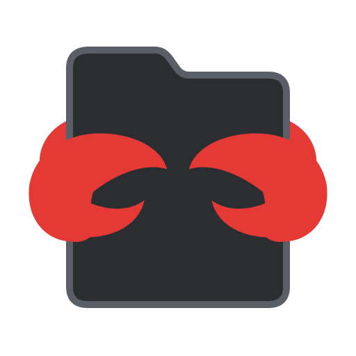
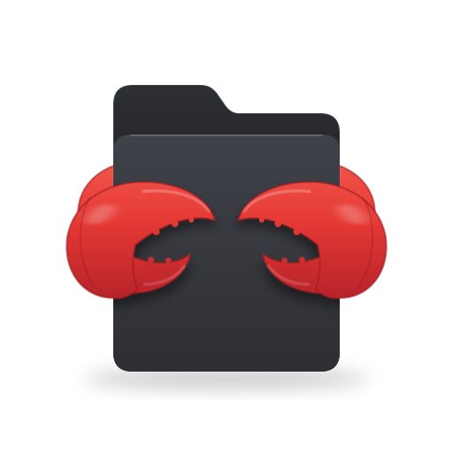

36 · The Settings window (W-106a), for the maintainer’s review
As SETTINGS_PLAN.md (D-029): a dialog over the window, opened by Settings… in the Actions menu, the palette or Ctrl+Shift+comma. Pages on the left, the chosen page on the right; changes apply at once. One scene per page at 1280 × 800, then the dialog in a 640 × 480 window.
36a · General
The page list on the left; the first page is General. Changes apply at once; Reset to defaults sets this page back to today’s behaviour.

Pictures — Rustphin
/home/alex/Pictures
Screenshots—2026-11-05 09:17Folder
IMG_4819.jpg4.8 MiB2026-10-27 16:41JPEG image
IMG_4820.jpg5.1 MiB2026-10-27 16:42JPEG image
3 items (9.9 MiB)Free: 1.8 TiB of 3.6 TiB (Data)
Settings
General
How Rustphin starts and works with the rest of the desktop.
Starting
When Rustphin starts
Folders opened by other applications
Desktop
Default file manager
Rustphin opens folders for this desktop.
Terminal
Ghosttyfrom KDE’s settings
Open files and folders with
As KDE is set
36b · Appearance
The dark design stays as it is (BRIEF.md); these choose glass or opaque, whose title bar, the text size and how faded hidden files are. The Title bar choice needs a new window, and says so.
Pictures — Rustphin
/home/alex/Pictures
Screenshots—2026-11-05 09:17Folder
IMG_4819.jpg4.8 MiB2026-10-27 16:41JPEG image
IMG_4820.jpg5.1 MiB2026-10-27 16:42JPEG image
3 items (9.9 MiB)Free: 1.8 TiB of 3.6 TiB (Data)
Settings
Appearance
How the window looks. The colours are Rustphin’s dark design.
Window
Look
Blur shows only where the desktop offers it.
Title bar
Applies to new windows.
Text and files
Text size
Hidden files are drawn at
60 %
36c · Views
The defaults for new folders and new windows. The page is longer than the dialog and scrolls on its own (the scrollbar on the right).
Pictures — Rustphin
/home/alex/Pictures
Screenshots—2026-11-05 09:17Folder
IMG_4819.jpg4.8 MiB2026-10-27 16:41JPEG image
IMG_4820.jpg5.1 MiB2026-10-27 16:42JPEG image
3 items (9.9 MiB)Free: 1.8 TiB of 3.6 TiB (Data)
Settings
Views
How folders are shown when they open.
Default view
View
Size
24 px
Each folder
Order
Sort by
Details view
Columns
Dates
Sizes
Previews
Thumbnails
up to 50 MB a file
36d · Toolbar
Dolphin’s “Configure Toolbars”: a live preview on top (the chosen item ringed), the available actions on the left (with search, and Separator first), the toolbar’s on the right, dragged by their grips or moved with the buttons between. The chosen item can show its icon or its icon and words. Reset to defaults gives back today’s toolbar.
Pictures — Rustphin
/home/alex/Pictures
Screenshots—2026-11-05 09:17Folder
IMG_4819.jpg4.8 MiB2026-10-27 16:41JPEG image
IMG_4820.jpg5.1 MiB2026-10-27 16:42JPEG image
3 items (9.9 MiB)Free: 1.8 TiB of 3.6 TiB (Data)
Settings
Toolbar
Choose the toolbar’s actions and their order. Drag them, or use the buttons.
Available actions
Search actions
Separator
Up one folder
Home folder
Copy
Cut
Paste
Rename
On the toolbar
Act as administrator
Separator
Back
Forward
Up one folder
Reload
Location
New
Open terminal here
“Back” shows
36e · Places
The same groups as the panel, managed in one list; a group’s places are still sorted in the panel itself.
Pictures — Rustphin
/home/alex/Pictures
Screenshots—2026-11-05 09:17Folder
IMG_4819.jpg4.8 MiB2026-10-27 16:41JPEG image
IMG_4820.jpg5.1 MiB2026-10-27 16:42JPEG image
3 items (9.9 MiB)Free: 1.8 TiB of 3.6 TiB (Data)
Settings
Places
What the places panel shows.
Sections
Show
Hidden places
Groups
Work2 places
Projects3 places
Media4 places
Deleting a group keeps its places. Drag the grips to reorder, as in the panel.
Panel
Width
240 pxor drag the panel’s edge
36f · Confirmations
Which actions ask first. Deleting for good always asks (D-011); its box is shown, ticked and unavailable, with the reason beside it.
Pictures — Rustphin
/home/alex/Pictures
Screenshots—2026-11-05 09:17Folder
IMG_4819.jpg4.8 MiB2026-10-27 16:41JPEG image
IMG_4820.jpg5.1 MiB2026-10-27 16:42JPEG image
3 items (9.9 MiB)Free: 1.8 TiB of 3.6 TiB (Data)
Settings
Confirmations
Which actions ask before they act.
Ask before
Always asked: it cannot be undone.
Executable files
Opening one
36g · Shortcuts
Read-only at first: every key of KEYBOARD.md, grouped as in the palette and searchable. Changing keys is later work. No Reset button here.
Pictures — Rustphin
/home/alex/Pictures
Screenshots—2026-11-05 09:17Folder
IMG_4819.jpg4.8 MiB2026-10-27 16:41JPEG image
IMG_4820.jpg5.1 MiB2026-10-27 16:42JPEG image
3 items (9.9 MiB)Free: 1.8 TiB of 3.6 TiB (Data)
Settings
Shortcuts
The keys Rustphin understands. Changing them comes later.
Search shortcuts
Navigation
BackAlt+LeftBackspace
Up one folderAlt+Up
Enter a locationCtrl+L
Open terminal hereShift+F4
Files
New folderF10
RenameF2
Move to trashDel
Delete for goodShift+Del
36h · About
The version, licence, credits, the privacy line and where the files are. Nothing is fetched from the network; there are no links to open.
Pictures — Rustphin
/home/alex/Pictures
Screenshots—2026-11-05 09:17Folder
IMG_4819.jpg4.8 MiB2026-10-27 16:41JPEG image
IMG_4820.jpg5.1 MiB2026-10-27 16:42JPEG image
3 items (9.9 MiB)Free: 1.8 TiB of 3.6 TiB (Data)
Settings
About
Rustphin and the work it builds on.

Rustphin
Version 0.1.0
A file manager for KDE Plasma, written in Rust.
Licence and credits
Licence
GPL-3.0-or-later
Follows the behaviour of Dolphin and KDE.Built with GPUI and GPUI-Kit. Icons: Lucide (ISC). Fonts: Inter, Space Grotesk and JetBrains Mono (SIL Open Font License).
Privacy and files
No telemetry. Rustphin never uses the network.
Settings
~/.config/rustphin/settings.toml
36i · A narrow window (640 × 480)
Below 720 px of window width the page list becomes a row of tabs above the page (it scrolls sideways; the rest of the pages are to the right), and the dialog keeps 16 px from every edge.
Pictures — Rustphin
/home/alex/Pictures
Screenshots—2026-11-05 09:17Folder
IMG_4819.jpg4.8 MiB2026-10-27 16:41JPEG image
IMG_4820.jpg5.1 MiB2026-10-27 16:42JPEG image
3 items (9.9 MiB)Free: 1.8 TiB of 3.6 TiB (Data)
Settings
General
How Rustphin starts and works with the rest of the desktop.
Starting
When Rustphin starts
Other applications
Sizes and behaviour
Dialog 760 × 560 px (at most the window less 16 px on each side), surface-raised with the accent outline and glow, as Properties. Title row 48 px with settings, Settings, Close.
Page list 200 px: 32 px rows, 16 px Lucide icon and the name; the current page in primary-subtle with the 2 px primary-bright bar and icon, as the current place. Up/Down move in it, Tab goes to the page.
Pages: a 15 px heading and one sentence, then groups under 10 px capital labels with a hairline; each setting a 32 px row, its label in a 184 px column and its control after it. Choices of two or three are segmented controls (primary-subtle for the chosen one); longer lists are 28 px drop-downs; on/off settings are checkboxes; ranges are sliders (fill primary-bright, thumb text) with the value in data-sm.
Footer: “Reset to defaults” (outlined, rotate-ccw) on the left for the page shown; “Close (Esc)” primary on the right. No OK or Apply: every change applies at once (D-029).
Toolbar page: two 28 px-row lists with grips (grip-vertical), four 36 × 28 px buttons between (add, remove, up, down), a preview above that rings the chosen item, and the icon or icon-and-words choice for it.